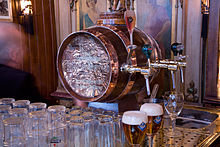
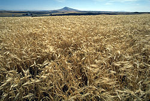

antecedente
Según Anderson y Hull, «el lúpulo da a la cerveza ese sabor límpido y amargo, sin el que malamente puede llamarse cerveza.En la Baja Edad Media se originó la costumbre de cocer el mosto con flores de lúpulo.A partir de entonces nació la bebida que hoy identificamos como cerveza, distinta del vino de malta.
"La cerveza es para los europeos lo que el sake para los japoneses."
Historia
Históricamente la cerveza fue desarrollada por los antiguos pueblos elamitas, egipcios y sumerios. Las evidencias más antiguas de la producción de cerveza datan de alrededor de IV milenio a. C. y fueron halladas en Godin Tepe, en el antiguo Elam (actual Irán). Algunos la ubican conjuntamente con la aparición del pan entre el 10 000 a. C. y 6000 a. C., ya que tiene una parecida preparación, agregando más o menos agua.
La primera gran fábrica de cerveza en España fue abierta en 1864 por el alsaciano Louis Moritz en Barcelona.
Fabrica Cerveza

Imagen de principios del siglo XX de La Cruz Blanca, fábrica de cerveza instalada en Santander en 1860
Barril Cerveza
puede contener hasta 60 litros
cultivo Cebada
campo de plantacion de cebada